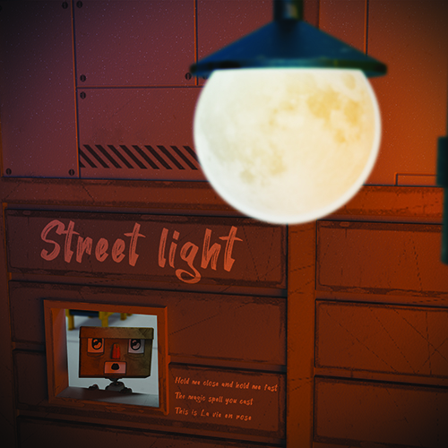

Interactive Media Custom Art Toy
부담스럽지 않으면서 컬렉터의 수집욕을 채워주는 개성
있는 아트토이는 없을까?’ 라는 질문에서 시작한 ‘CUS
TOM ART TOY’ 앱은 구매자의 취향에 따라 헤어, 머
리, 몸통, 팔과 다리 신발 등 세분화된 파츠를 직접골라
커스텀하여 주문할 수 있는 아트토이 주문 앱이다

Multimedia Design Bestsellers in Shoes
신발의 모든 것. 유명 신발 브랜드의 베스트셀러를 자동차로 풀어낸 정보시각화입니다.
신발의 출시일, 용도, 가격, 소재 등 11가지의 정보를 수집하고 수치에 따라 나눈 데이터를 자동차 파츠로 조합하여 다양한 디자인의 자동차 모델로 재탄생시켰습니다.

Moving Image Animation Street light
인공지능 로봇의 낭만을 담은 단편 애니메이션입니다. 반복되는 노동에 지쳐있던 인공지능 로봇이 어느 날 창문 너머의 가로등을 발견하게 되고
반짝이는 가로등 불빛에 매료된 인공지능 로봇이 그날 밤 공장 한 켠의 낡은 카세트 라디오를 손에 쥐고 탈출을 시도하게 되는 내용입니다.
문득 올려다본 밤하늘의 보름달이 가로등에 겹쳐지는 것을 보았던 저의 경험을 모티브로 제작하게 되었습니다.